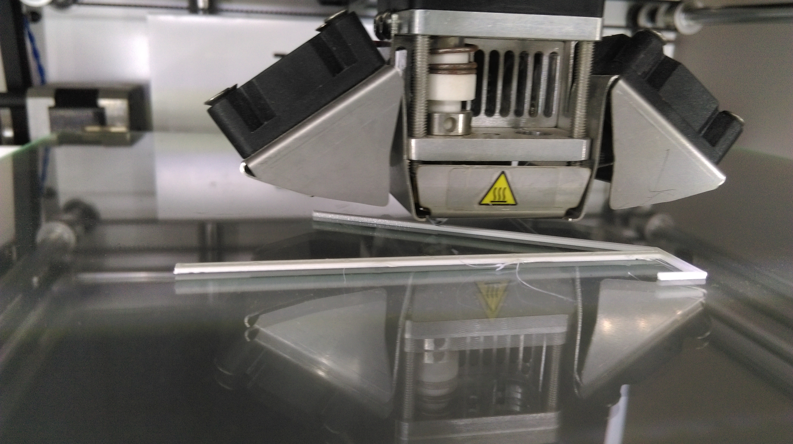

Fransisco started the day with a brief lecture on designs and also introduced the tool so called antimony for which i have struggled to install and filed two issues in the github to get things resolved
This image represntes how we calliberate the base plate of the 3D printer (Ultimaker 2) with a pieace of paper in all the 3 pins in the printer we just have to make the paper hardly movable like its nearly touches the pin while moving the paper to and fro
I just planned a mobile stand as my assignment for 3D-Printing.We have to just load the g-code file to the SD-card of the printer and to select the needed file in the ultimaker interface ,we used the tool known as'CURA' for setting the 3d printing setup like speed,path etc .
-
Controllable parameters:
- speed : slower the better, normal speed 50mm/sec
- temperature : lower the better, find the minimum temp and use that.
- fill density : lower density saves material but lowers the structural robustness.
- speed in between printing layers. We can make it wait in between layers for the plastic to solidify.
- thickness of the layer : 100 micron is standard. 60 is great, anything below, don't bother. 150 if you are in a hurry.111
I am Providing pictures of the same in different stages of implementation


This is my final product.